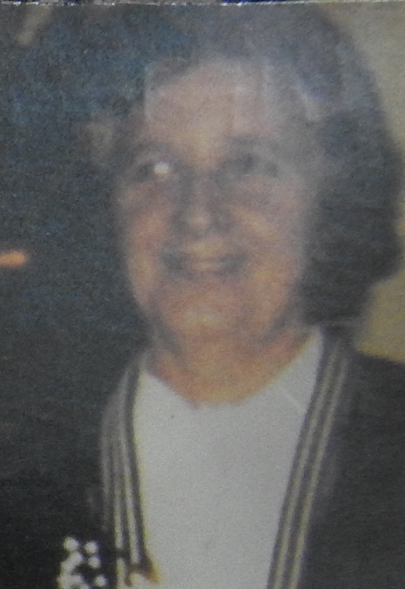
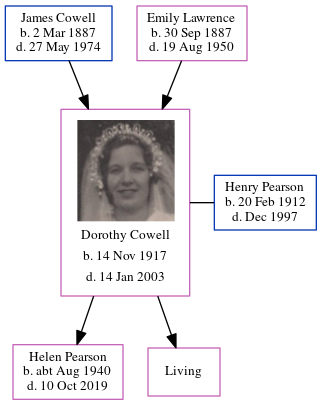

Dorothy Helen Pearson (née Cowell) 1917 - 2003
[ Home ] | [ Calendar ] | [ Surnames Index ] | [ Errors ] | [ Family History ]The child of James Cowell (a seaman collier with the whitstable shipping company) and Emily Lawrence, Dorothy Cowell, (also known as Dolly Cowell) the aunt of Nigel Horne, was born in Sutton, Kent, England on 14 Nov 19171,2,3,4,5 and married Henry Pearson (with whom she had 2 children: Helen Anne and Jill, along with 1 surviving child) at St Mary's Church, Minster, Thanet, Kent, England on 21 Oct 19396.
During her life, she was living at 7 Pouces Cottages, Minster in Thanet on 19 Jun 19211 and on 29 Sept 19392; and at 3 Laundry Road, Minster in Thanet in 19657.
She died on 14 Jan 2003 in Herne Bay, Kent, England5.
Parents
- James Frederick was born on 2 Mar 1887
- Emily Jane was born on 30 Sept 1887
Children
- Helen Anne was born c. Aug 1940
Citations
- 1921 Census Of England & Wales - Findmypast (was age 3 and the daughter of the head of the household)
- 1939 Register - Findmypast (was recorded at this address)
- England & Wales deaths 1837-2007 - Findmypast
- England & Wales, Birth Index: 1916-2005 Online publication - Provo, UT, USA: The Generations Network, Inc., 2008.Original data - General Register Office. England and Wales Civil Registration Indexes. London, England: General Register Office. © Crown copyright. Published by permission of the Cont
- England & Wales, Death Index: 1984-2005 Online publication - Provo, UT, USA: The Generations Network, Inc., 2007.Original data - General Register Office. England and Wales Civil Registration Indexes. London, England: General Register Office. © Crown copyright. Published by permission of the Cont
- England & Wales, Marriage Index: 1916-2005 Online publication - Provo, UT, USA: The Generations Network, Inc., 2009.Original data - General Register Office. England and Wales Civil Registration Indexes. London, England: General Register Office. © Crown copyright. Published by permission of the Cont
- 1965 Kelly's Thanet Directory
Media
Dorothy Cowell - Henry Pearson - marriage

Dorothy Cowell
Dorothy Cowell
Thanet Advertiser 19 Jul 1929

Thanet Advertiser 27 Oct 1939

Dorothy Cowell - 2

1965 Kelly's Thanet Directory

England & Wales marriages 1837-2008 - BMD/M/1939/4/AO/000391/014
England & Wales births 1837-2006 - BMD/B/1917/4/AZ/000233/080
England & Wales deaths 1837-2007 - BMD/D/2003/1/85663515
1939 Register Transcription - TNA-R39-1820-1820G-008-31
Family Tree
Map
Generated by ged2site. Last updated on Jul 3, 2024